数据结构试卷1
一、填空（每空2分，共20分）
1数据结构包括数据的 逻辑 结构和 物理 结构。
2单链表head为空的判定条件是head== NULL
3栈的特点是：先进 后出 。
4稀疏矩阵中第2行3列的元素值是5，这个元素的三元组是 （2，3，5） 。
5具有n个结点的二叉树，其二叉链表的n个结点中共有 2n 个指针域，在这些指针域中有 n+1 个指针域是空的。
6在有12个结点的无向图中，其边数最多为 66 条。
7求最短路径的算法有 Dijkstra 算法和 Floyd 算法。
二、简答题（每题8分，共24分）
已知一组数（2，3，5，7，8）
1 以这些数作结点的键值，画出一棵查找树。
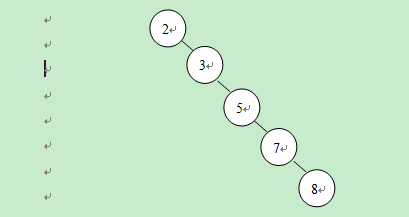
2 以这些数作结点的键值，画出一个堆。
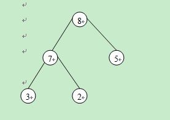
3 以这些数作叶子结点的权值，画出一棵哈夫曼树。
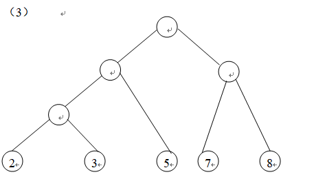
三、简答题（每题8分，共16分）
一个网络如下
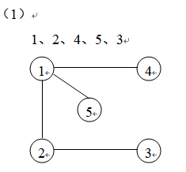
1 求出从顶点1出发的一个广度优先搜索序列和一棵广度优先生成树。
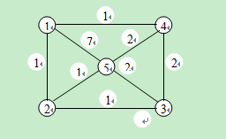
(2)求出它的一棵最小生成树并画出求解过程。
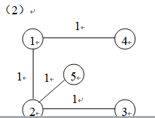
四、对一组关键字8，4，2，5，7进行排序，写出分别用下列排序方法排序时，每一趟排序过程中这些关键字的序列。（每题8分，共16分）
(1)快速排序
[8，4，2，5，7]
[7，4，2，5] 8
[5，4，2] 7，8
[2，4，5] 7，8
2，4，5，7，8
2 冒泡排序
8，4，2，5，7
4，2，5，7，8
2，4，5，7，8
五、程序填空（每空2分，共10分）
填空，实现顺序表的删除运算，其中list为存顺序表的一维数组，* p_n为表长，i为被删除元素在list数组中的下标；要求删除后仍为一个顺序表。
int sq_delete(list, p_n, i)
int list[ ];
int * p_n, i;
{ int j;
if ( i < 0 || i ② >= * p_n) return(1);
for (j= ③i+1 ; j ④< * p_n; j++)
list[j－1]=list[ ⑤j ];
( * p_n)――;
return (0);
}
六、编程（14分）
已知一棵二叉树以链式存储方式存储（指向树根的指针变量为root），写一函数产生此棵二叉树的一个副本。
NODE * copy(t)
NODE *t;
{ NODE *p;
if (t= =NULL) return(NULL);
else { p=(NODE *)malloc (sizeof (NODE));
p－>data=t－>data;
p－>lchild=copy(t－>lchild);
p－>rchild=copy(t－>rchild);
return(p);
}
}
数据结构试卷1
一、填空（每空2分，共28分）
1数据的物理结构又称为 存储 结构。
2数据元素又称为 元素 或 结点 。
3队列的特点是：先进 先出 ，判断一个链队head为空的语句是：head＝＝ NULL 。
4稀疏矩阵是指当一个矩阵中有很多元素为 零 并且非零元素的分布没有 规律 时的一种矩阵。
5一棵二叉链表中的一个结点共有 3 个域。
6图的遍历包括 深度优先搜索法 和 宽度优先搜索法 。
7求解图的最小生成树，通常有两种方法：一是 prim 法，二是 kruscal 法。
8二分查找必须具备以下两个条件：
<1> 采用顺序存储结构 <2> 排好序
二、简答题（每题8分，共16分）
1已知一个结点的序列是{1，7，5，3，2}，按照书上的步骤生成一棵查找树。
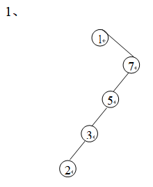
2以一组数{1，7，5，3，2}作叶子结点的权值，画出一棵哈夫曼树。
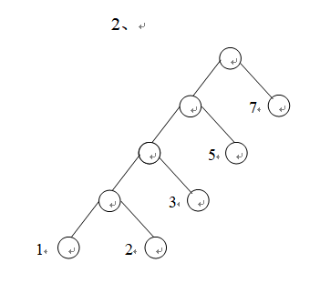
三、简答题（每题8分，共16分）
一个网络如下：
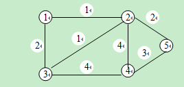
1求出从顶点1出发的一棵广度优先生成树。
(2)求出它的一棵最小生成树。
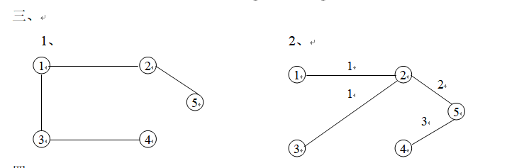
四．对一组关键字15, 17, 2, 4, 3进行排序，写出分别用下列排序方法排序时，每一趟排序结束时这些关键字的序列。（每题8分，共16分）
1快速排序
15，17，2，4，3；
3，4，2，15，17；
2，3，4，15，17；
(2)直接插入排序
15，17，2，4，3；2，15，17，4，3；
2，4，15，17，3；2，3，4，15，17。
五、程序填空（每空2分，共10分）
填空, 实现顺序表的插入运算，其中list为存顺序表的一维数组，MAXSIZE为其容量，* p_n为表长，i为被插入元素x在list数组中的下标；要求插入后仍为一个顺序表。
int sq_ insert (list, p _n, i, x)
int list [ ], x;
int * p _n, i;
{ int j;
if ( i ①< 0 || ② >= * p _n) return (1);
if ( * p _n ③= = MAXSIZE) return (2);
for (j= ④*p_n-1 ; j>i; j――)
list [j]=list[j－1];
list [i]= ⑤x ;
( * p _n)++;
return (0);
}
六、编程（14分）
已知两棵二叉树以链式存储结构存储（指向树根的指针分别为r，t），写一个递归函数判断此两棵二叉树是否相等。
int equal_tree ( NODE *r, NODE *t )
{
if( r = = NULL && t = = NULL ) return ( 1 );
if( r ! = NULL && t! = NULL )
if ( r ->data = = t->data )
if( equal_tree( r->lchild, t->lchild ) )
return equal_tree( r->rchild, t->rchild );
return ( 0 );
}
数据结构试卷3
一、 画出串st=‘work’的一种顺序存贮结构和一种链式存储结构。（15分）
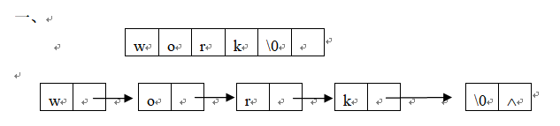
二、填空完成下面的函数。此函数是将串s2加到串s1的末尾形成新的s1串，即s1＝s1＋s2；其中MAXN为s1数组的容量。（15分）
status strcat (s1, s2)
char s1[ MAXN ], s2[ ];
{ int i, j, k;
if ( ( i=strlen (s1) )+(j=strlen(s2) )
①>= MAXN)
return (fail);
for (k=0; k ② <=j ; ③ k++ )
s1 [i+ ④ k ]=s2[ ⑤ k ];
return (success);
} strlen为求串长函数。
\
三、推导出二维数组b[3][6]按列序行序方式（即：列序优先方式，每个元素占s个存贮单元。）存贮时的地址公式。（15分）
∵b[i][j]=b[o][j]+i×s
b[o][j]=b[o][o]+j×3×s
∴b[i][j]=b[o][o]+(i+3j)×s
四、 已知一组数（9，5，8，6，2），分别采用插入排序、选择排序进行排序，写出排序过程中每遍处理后的结果。（10分）
插入9，5，8，6，2； 5，9，8，6，2；
5，8，9，6，2； 5，6，8，9，2；
2，5，6，8，9.
选择 9, 5, 8, 6, 2; 2, 5, 8, 6, 9
2, 5, 8, 6, 9; 2, 5, 6, 8, 9
五、已知一棵树如下图所示，
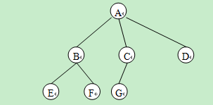
1分别画出它的二种链式存贮结构。（7分）
(2)写出它的层次遍历序列、前序遍历序列。（8分）
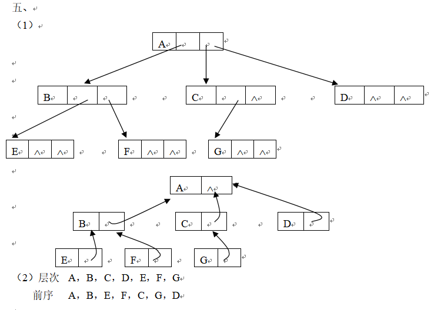
六、已知5个数7，9，3，6，2
(1)以9作根结点值，画出由这组数作结点值所组成的一棵查找树。（7分）
(2)以它们作结点的值，画出一棵完全的二叉树。（8分）
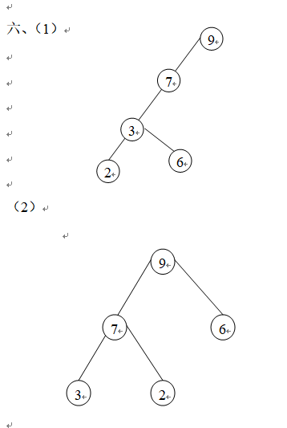
七、写函数（15分）
已知一个无向图G，写一个递归式函数实现对此图的深度优先搜索。
void dfs( int u )
{
L_NODE *t;
visit[u] = 1;
printf(“%4d”, u);
t = head[u];
while( t != NULL )
{
if ( visit[ t->ver] == 0 ) dfs( t->ver);
t = t->link;
}
}
数据结构试卷4
一、一个线性表A=（2，5，3，8）,画出它的如下存储结构。
(1)双向链表（5分）
(2)带表头结点的环形链表。（5分）
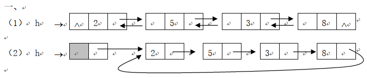
二、 填空，完成以下进行模式匹配的函数simple _match (t, p, n, m)，其中t为正文，n为其长度；p为模式，m为其长度。（15分）
#define MAXN 100
#define MAXM 30
char t[MAXN], p[MAXM]；
int simple _match (t, p, n, m)
char t[ ], p [ ]； int n, m;
{ int i, j, k;
for ( i=0; i<= ① n-m ; i++)
{ for ( j=0, k=i; j< ② m && t[k] ③= = p[j]; k++, j ④ ++ );
if (j＝＝ ⑤m ) return (i);
}
return(－1); }
三、已知一个稀疏矩阵A，画出它的三元组存贮结构数组（12分）
0 0 0 1
A= 0 0 0 2
0 3 0 0
0 0 0 4
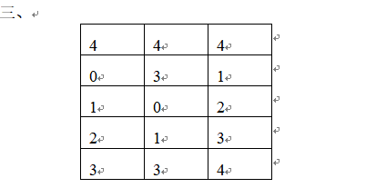
四、已知一棵树如下图所示，
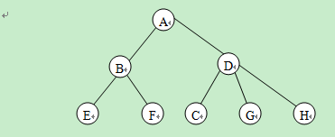
(1)写出它的后序遍历序列、前序遍历序列。（7分）
后序E，F，B，C，G，H，D，A
前序A，B，E，F，D，C，G，H
(2)将它转换成对应的二叉树。（8分）
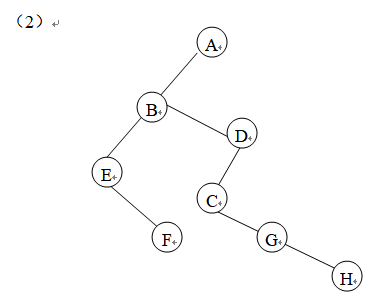
五、已知5个数2，5，8，4，9
1画出由这5个数作结点值所组成的一个堆。（7分）
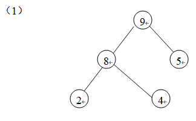
2画出由这5个数作结点值所组成的一棵平衡的查找树。（8分）
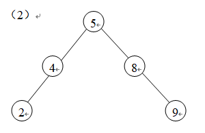
六、(1)将下图中有向边先看成无向边，写出下图从顶点1出发的一个深度优先搜索序列，并画出相应的一棵深度优生生成树。（8分）
(2)将下图中有向边先看作无向边，用Kruscal算法求出它的一棵最小生成树(要求画出求解过程)。（10分）
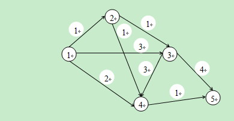
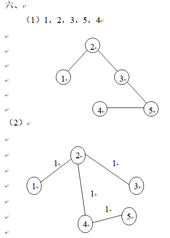
七、 写函数（15分）
已知一棵二叉树以链式存储方式存储（指向树根的指针变量为root），写一函数求出它的叶子结点的总数。
struct node{ char data;
struct node* lchild;
struct node* rchild;
}
typedef struct node NODE;
int count (NODE, *t)
{ if (t= = NULL) return(0),
else retutn(1+count(t→lchild)+count(t→rchild));
}